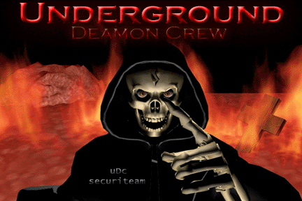

Page Hacked
= Yes
Bugs = lpd
Backdoor = Installed
Trojan = Installed
Fix = NONE Unless you reINSTALL your system or
buy a new CPU (we owned your BIOS setting)
http://thestar.com.my/news/story.asp?file=/2001/1/20/nation/2004tmwa&sec=nation
QUOTE "We allowed the hacker to proceed with the break-in so that we could track him,'' said Ivoli.com chief executive officer Rama Krishnan. "We managed to get his unique network card number as well as his Internet Protocol (IP) address. "We also know that the hacking originated from Brickfields, Kuala Lumpur, and we have submitted the IP address to the Malaysian Computer Emergency Response Team (MyCERT),'' he said. END QUOTE
We will not cease to smash all so-called secure servers until MyCERT and Mimos Berhad submit to the fact our internet security are too weak to resist any local intrusion, what more if they are from foreign threat?
We will cease these attacks once our conditions are met.
Condition #1. NSTP will retract their bogus article and admit that they are most short-sighted and lack the correct information to publish their article on the 14th of January 2001.
Condition #2. MyCERT and their representitive will retract their statement on that same article
QUOTE "Hacking is a deplorable act of industrial espionage, costing time and money to rectify. "With the Internet becoming more ubiquitous, it has opened up vast potential vulnerable sites and increased the rampancy of computer and website hacking. Security and privacy remains an industry-wide problem," he says. END QUOTE
Condition #3. Malaysian internet security are below any internet security standards and it is laughable that we are the pioneers of the MultiMedia Super Corridor. (By the way, we do not HAVE any paper qualification or certification in any related field in computers or etc. So please don't say any "school boy" can hack into a server. REMEMBER WE OWNED YOU!!!!! THIS IS UNDERGROUND DAEMON CREW TALKING)
Unless these conditions are met and published to all local and foreign media within the next 48 hours, we will then proceed to "test" and continue our research on Malaysian internet security bugs.
Knowledge is empowerment to the masses.
uDc underground Daemon
crew Greets to:
Admin: sLash^ (#securiteam)
the crew and staff of #Securologix & #securiteam
mindriot^,ScArFaCeKiLLa, ziggypop, ac|dbra|n, eF73, gabres
A||MyLife, [Cat5], NetChains, Necrose, command, Xevian
wkD crew
skrilla, blazin, t1, le0pard,
ka0x, neur0tik, pr0xy & crew
and the rest of you, you know who you are.
Text done by; IRCTerrorist a.k.a CursedDaemon
Special greetings to: MyCERT & Mimos Berhad
Any questions?